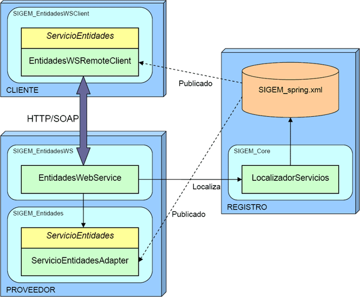

Servicios web
Introducción
En esta sesión vamos a estudiar los servicios web del sistema SIGEM. Comenzaremos diseccionando los servicios y clientes de servicios ya presentes en el sistema. Tras esto, crearemos nuestros propios clientes que accedan a servicios web de SIGEM, y por último añadiremos nuevos servicios al sistema.
Servicios web de SIGEM
Vamos a comenzar estudiando los servicios web que tenemos disponibles en el sistema SIGEM, y el uso que se hace de los mismos.
Como comentamos previamente, SIGEM está basado en una arquitectura orientada a servicios. En el sistema tenemos una serie de servicios, implementados en diferentes módulos (proyectos de Eclipse), cada uno de ellos accesible mediante una interfaz (fachada) concreta.
Estos servicios pueden ser accedidos de forma local (la interfaz da acceso directamente a su implementación), pero muchos de ellos también permiten ser utilizados de forma remota. Para ello se utilizan servicios web.
Para que un determinado servicio de SIGEM pueda ser accedido de forma remota se necesitará un módulo adicional que cree una capa de servicio web sobre él. Este módulo de servicio web:
- Recibirá el mismo nombre del módulo en el que está implementado el servicio, pero terminado en WS.
- Dependerá en Eclipse del proyecto correspondiente al módulo local en el que se implementa el servicio.
Este servicio web ofrecerá de forma remota las operaciones del servicio al que da acceso. Para acceder a estas operaciones mediante el servicio web, tendremos en SIGEM también un módulo cliente para dicho servicio web.
El módulo con el cliente para acceder al servicio web:
- Tendrá el mismo nombre que el módulo en el que está implementado el servicio al que accede, pero esta vez acabado en WSClient.
- Ofrecerá una fachada que nos dará acceso a todas las operaciones del servicio web, accediendo a él de forma remota. Esta fachada implementará la interfaz que tenemos en SIGEM para el servicio concreto al que accede. De esta forma tanto el cliente para el servicio web como la implementación local implementarán la misma interfaz, y por lo tanto podremos acceder de forma local o remota sin afectar al código de la aplicación.
Vamos a estudiar como ejemplo un módulo concreto. Nos centraremos en el módulo Entidades, que nos dará acceso a la información de las diferentes entidades gestionadas por el sistema SIGEM. Las funcionalidades de este módulo se encuentran implementadas en el módulo de nombre SIGEM_Entidades. En este módulo tenemos una fachada ServicioEntidadesAdapter que implementa la interfaz ServicioEntidades. Existe además un proyecto SIGEM_EntidadesWS que contiene un servicio web que ofrece todas las operaciones de dicha interfaz. Este módulo SIGEM_EntidadesWS depende de SIGEM_Entidades, ya que las operaciones del servicio web internamente invocarán sus correspondientes operaciones en ServicioEntidadesAdapter (dentro de las librerías del módulo de servicio web estarán incluidas las clases locales que implementan el servicio Entidades).
Por otro lado tendremos un cliente para este servicio web en el módulo SIGEM_EntidadesWSClient. Este módulo no tiene ninguna dependencia con los anteriores, ya que su función es dar acceso a los mismos desde una máquina remota (no tendremos en local la implementación del servicio Entidades). En él encontramos una clase EntidadesWSRemoteClient, que también implementa la interfaz ServicioEntidades, pero en este caso en la implementación de cada operación lo que se hace es invocar al servicio web mediante el cliente Axis generado. De esta forma, desde otros módulos de SIGEM siempre accederemos al servicio mediante la interfaz ServicioEntidades, independientemente de la implementación concreta que utilicemos del mismo. Como hemos visto, esta implementación puede ser:
- ServicioEntidadesAdapter: Implementación local del servicio.
- EntidadesWSRemoteClient: Cliente para acceder de forma remota al servicio, invocándolo como servicio web.
Será responsabilidad de la clase LocalizadorServicios (perteneciente al proyecto SIGEM_Core) instanciar una de estas dos clases. La información sobre las clases concretas que instanciará se encuentra en el fichero de configuración de Spring SIGEM_spring.xml.

Vamos a estudiar con más detalle la clase EntidadesWSRemoteClient que da acceso al cliente del servicio de entidades. Podemos ver que contiene un campo service con una referencia al stub para acceder al correspondiente servicio web. Sin embargo, este stub no se obtiene en ninguna parte del código de la clase, simplemente se define un getter y un setter para acceder a dicho campo. Entonces, ¿dónde se instancia el stub?. La respuesta a esta pregunta está en el fichero de configuración de Spring (SIGEM_spring.xml). En este fichero se especifica que al instanciar la clase EntidadesWSRemoteClient se le debe inyectar una instancia del stub como propiedad.
Examinaremos ahora como se define esta configuración en el fichero de Spring. En primer lugar el bean que nos da acceso al servicio de entidades mediante servicios web se define como:
<bean id="&ENTIDADES;.&SIGEM;.&WS;" class=
"ieci.tecdoc.sgm.entidades.ws.client.EntidadesWSRemoteClient"
parent="&ENTIDADES;" lazy-init="true">
<property name="service"
ref="&ENTIDADES;.&SIGEM;.&WS;.&SERVICE_FACTORY;"/>
</bean>
Podemos observar que se especifica la clase ieci.tecdoc.sgm.entidades.ws.client.EntidadesWSRemoteClient, que es la que el LocalizadorServicios nos devolverá cuando solicitemos acceso al servicio de entidades mediante servicios web. Pero además vemos que se especifica que en su propiedad service se inyecte el bean definido en &ENTIDADES;.&SIGEM;.&WS;.&SERVICE_FACTORY;. Esta definición se encuentra a continuación en el fichero de configuración:
<bean id="&ENTIDADES;.&LOCATOR;"
class="ieci.tecdoc.sgm.entidades.ws.client.
EntidadesWebServiceServiceLocator" lazy-init="true">
<property name="entidadesWebServiceEndpointAddress"
value="&ENTIDADES_WS_ENDPOINT;"/>
</bean>
<bean id="&ENTIDADES;.&SIGEM;.&WS;.&SERVICE_FACTORY;"
factory-bean="&ENTIDADES;.&LOCATOR;"
factory-method="getEntidadesWebService" lazy-init="true">
<property name="header" ref="&SIGEM;.&API;"/>
</bean>
En este caso este bean se instancia mediante una factoría, concretamente mediante la clase locator generada por Axis en el stub (EntidadesWebServiceServiceLocator). Se especifica también el método de esta factoría que se utilizará para instanciar el bean (getEntidadesWebService). Podemos observar también que al locator se le inyecta la dirección del endpoint del servicio como propiedad entidadesWebServiceEndpointAddress.
Clientes para los servicios
Comenzaremos accediendo a algunos de los servicios web disponibles en SIGEM. Como hemos visto, tenemos varios proyectos en SIGEM que hacen de cliente para los servicios web de este sistema, pero también podremos crear nuevas aplicaciones cliente a partir de los documentos WSDL de los diferentes servicios web disponibles. Vamos a comenzar probando alguno de los clientes ya existentes.
Pasos previos
Para hacer estas pruebas, necesitamos tener el sistema SIGEM en marcha, ya que vamos a acceder a los servicios web que éste nos ofrece. Por lo tanto iniciaremos el servidor Postgres de BD y el servidor web Tomcat de la misma forma que en proyectos anteriores:
> su postgres > pg_ctl start -D /usr/local/pgsql/data > exit > cd /home/sigem/SIGEM/jakarta-tomcat-5.0.28/bin > ./startup.sh
En esta sesión importaremos en Eclipse algunos proyectos de servicio web de SIGEM, que en realidad son simplemente proyectos web de Eclipse que contienen las librerías de Axis y la configuración para que los servlets de dicho framework nos ofrezcan una serie de servicios web.
Para que Eclipse reconozca un proyecto importado como proyecto web, este proyecto deberá contener un directorio oculto de nombre .settings. Sin embargo, estos directorios y ficheros ocultos se perdieron en la versión que estamos utilizando del código fuente de SIGEM. Para recuperarlos podremos utilizar un nuevo parche disponible en la sección de software del curso (Parche para el código fuente de los proyectos web SIGEM). Descomprimiremos este parche en el mismo directorio en el que habíamos descomprimido los fuentes, de forma que añada estos directorios perdidos.
Prueba de un cliente
Vamos a probar el servicio CatalogoTramitesWS. Podemos consultar el documento WSDL que define este servicio en la siguiente dirección (dentro de http://localhost:8080):
/SIGEM_CatalogoTramitesWS/wsdl/CatalogoTramitesWebService.wsdl
Vamos a probar este servicio mediante Web Services Explorer. Por ejemplo podríamos probar a ejecutar la operación getDocuments. Podemos solicitar los tipos de documentos definidos en la entidad con identificador 000 (que es la única definida por defecto).
Una vez hemos comprobado que el servicio funciona correctamente, vamos a probar el cliente que tenemos en SIGEM para dicho servicio. Este cliente se encuentra en el proyecto SIGEM_CatalogoTramitesWSClient. Al abrir el proyecto veremos que contiene el stub generado por Axis para acceder al servicio y la clase CatalogoTramitesWSRemoteClient que se encarga de adaptar este stub a la interfaz ServicioCatalogoTramites utilizada en SIGEM.
Podemos encontrar también en este proyecto un test case de JUnit en el directorio test, pero no funciona correctamente. Por este motivo, vamos a crear nuestro propio driver para probar el cliente. Crearemos en el mismo directorio de fuentes test una clase PruebaCatalogoTramites con un método main para probar el método getDocuments del servicio. Podemos utilizar un código como el siguiente para hacerlo:
CatalogoTramitesWebServiceServiceLocator locator =
new CatalogoTramitesWebServiceServiceLocator();
CatalogoTramitesWebService servicio =
locator.getCatalogoTramitesWebService();
Entidad entidad = new Entidad();
entidad.setIdentificador("000");
Documentos documentos = servicio.getDocuments(entidad);
DocumentoExtendido [] listaDocs = documentos.getDocumentos();
for(int i=0;i<listaDocs.length;i++) {
System.out.println("[" + listaDocs[i].getExtension() + "] " +
listaDocs[i].getDescription());
}
De esta forma probamos directamente el stub que nos da acceso al servicio. Sin embargo, podría interesarnos probar la clase que realmente nos va a dar acceso a este servicio cuando utilicemos el LocalizadorServicios desde cualquier otro módulo de SIGEM. Para ello crearemos un nuevo programa de prueba al que llamaremos PruebaLocalizadorCatalogoTramites que tendrá un método main con el siguiente código:
ServicioCatalogoTramites servicio = LocalizadorServicios
.getServicioCatalogoTramites(
"SIGEM_ServicioCatalogoTramites.SIGEM.WEBSERVICE");
Entidad entidad = new Entidad();
entidad.setIdentificador("000");
Documentos documentos = servicio.getDocuments(entidad);
for(int i=0;i<documentos.count();i++) {
System.out.println("[" + documentos.get(i).getExtension() + "] "
+ documentos.get(i).getDescription());
}
Crear un nuevo cliente
Una vez hemos probado uno de los clientes ya disponibles en SIGEM, podemos plantearnos crear una nueva aplicación cliente que acceda a los servicios de este sistema. Vamos a crearnos un nuevo proyecto Java en Eclipse que haga de cliente de SIGEM_CatalogoServiciosWS, que tendrá como nombre ClienteCatalogoTramites.
Dentro de este cliente generaremos el stub mediante Eclipse a partir del documento WSDL que define el servicio. Una vez se haya generado este stub, podremos añadir un programa de prueba similar al definido en el punto anterior para comprobar que nuestro cliente funciona correctamente
Cliente con autentificación
Algunos servicios de SIGEM se encuentran protegidos mediante seguridad declarativa del servidor. Este es el caso del servicio SIGEM_AutenticacionUsuariosWS. Si observamos el fichero web.xml de este proyecto, veremos que para acceder tendremos que entrar con un usuario con rol SigemWSClient. Sin embargo, si observamos el fichero tomcat-users.xml del directorio de configuración de Tomcat veremos que no tenemos ningún usuario con dicho rol. Por este motivo, tendremos que añadir dicho usuario y reiniciar el servidor para que cargue esta configuración:
<role rolename="SigemWSClient"/> <user username="sigem" password="sigem" roles="SigemWSClient"/>
Una vez hecho esto podremos crear un cliente para acceder a este servicio. Para ello crearemos un nuevo proyecto Java en Eclipse con el nombre ClienteAutenticacion. Dentro de este proyecto crearemos el stub para acceder al servicio a partir de su documento WSDL.
En este caso, al utilizar el stub deberemos especificar el usuario y contraseña con el que queremos acceder al servicio. Crearemos una clase de prueba ClienteAutenticacion, con un método main con un código como el siguiente:
AdministracionUsuariosPortalWebServiceServiceLocator locator =
new AdministracionUsuariosPortalWebServiceServiceLocator();
AdministracionUsuariosPortalWebService servicio =
locator.getAdministracionUsuariosPortalWebService();
((AdministracionUsuariosPortalWebServiceSoapBindingStub)servicio)
.setUsername("sigem");
((AdministracionUsuariosPortalWebServiceSoapBindingStub)servicio)
.setPassword("sigem");
Entidad entidad = new Entidad();
entidad.setIdentificador("000");
CriterioBusquedaUsuario cbu = new CriterioBusquedaUsuario();
ListaUsuarios listaUsuarios = servicio.buscarUsuarios(cbu, entidad);
Usuario [] usuarios = listaUsuarios.getUsers();
for(Usuario u: usuarios) {
System.out.println(u.getId() + ", " + u.getPassword() + ", " +
u.getEmail() + ", " + u.getName() + ", " +
u.getLastname());
}
Podemos comprobar como si intentamos acceder sin especificar correctamente el usuario se nos deniega el acceso.
Prueba de cliente y servicio desde Eclipse
Hasta ahora hemos probado servicios web de SIGEM ya instalados en el servidor Tomcat de la máquina virtual. Sin embargo, si queremos modificar o desarrollar nuevos servicios resultará más cómodo ejecutar el servicio directamente desde Eclipse. Vamos a hacer esto para probar el servicio SIGEM_EntidadesWS que se encuentra en el workspace proporcionado en esta sesión.
Lo primero que deberemos hacer es parar el servidor Tomcat de la máquina virtual, para evitar que haya conflicto de puertos con el que ejecutaremos a continuación en Eclipse. Una vez hecho esto, ejecutaremos el proyecto SIGEM_EntidadesWS en el servidor desde Eclipse, iniciándose así el servidor Tomcat desde dentro de este entorno.
Una vez se haya iniciado el servidor con la aplicación SIGEM_EntidadesWS desplegada en él, podemos comprobar en un navegador que la aplicación se haya cargado correctamente accediendo a su correspondiente URL. Ahora podremos ejecutar el cliente que tenemos en el proyecto SIGEM_EntidadesWSClient para acceder al servicio. En este cliente tenemos la clase PruebaEntidades en el directorio test. Ejecutaremos esta clase que accederá al servicio para obtener la lista de entidades, y las imprimirá en la consola.
Crear nuevos servicios
Algunos servicios de SIGEM por el momento no son accesibles de forma remota. Vamos a ver ahora como podríamos construir un módulo de servicio web que nos diese acceso a ellos. Por ejemplo, en anteriores sesiones estuvimos probando algunas de las funcionalidades del módulo SIGEM_RegistroPresencialAdmin. Podemos observar que entre los módulos de SIGEM no existe ningún módulo SIGEM_RegistroPresencialAdminWS, de forma que no podremos acceder a estas funcionalidades de forma remota. Por lo tanto, vamos a plantearnos crearlo nosotros.
Vamos a empezar implementando un servicio web para este módulo que sólo exponga una de sus operaciones: getOficinas.
Seguiremos los siguientes pasos:
- Creamos un nuevo proyecto web dinámico en Eclipse.
- Hacemos el proyecto web dependiente del módulo SIGEM_RegistroPresencialAdmin.
- Creamos en el nuevo proyecto el fichero JWS de nuestro servicio, con las operaciones que queremos ofrecer.
- En la implementación de estas operaciones, obtendremos acceso a la implementación local del servicio mediante la clase LocalizadorServicios, e invocaremos en ella las operaciones que correspondan.
- Creamos un servicio web Axis a partir de la clase JWS definida.
AdventenciaSi intentamos devolver directamente las clases comunes que tenemos en SIGEM para encapsular los datos veremos que nos da un error al intentar generar el servicio, ya que estas clases utilizan objetos de tipo List que no están soportados por Axis. Por lo tanto, tendremos que crear nuestras propias clases para encapsular estos datos, en las que se usen arrays en lugar de Lists. Podemos seguir el ejemplo del servicio SIGEM_EntidadesWS para hacerlo.
- Deberemos además añadir al proyecto las librerías spring y log4j. La primera de ellas para poder utilizar el LocalizadorServicios. Las segunda para poder generar logs que nos ayuden a su depuración.
- Además, necesitamos añadir un fichero context.xml con la referencia a la fuente de datos
JNDI que utilizará la aplicación para acceder a la base de datos del registro. Este fichero deberá situarse en
el directorio WebContent/META-INF y su contenido será el siguiente:
<Context> <ResourceLink global="jdbc/registroDS_000" name="jdbc/registroDS_000" type="javax.sql.DataSource"/> </Context> - Desplegamos y probamos el servicio web.
Una vez tengamos este servicio web creado, podríamos crear un cliente para acceder a él. El proyecto en el que lo deberíamos crear, para mantener la nomenclatura del sistema SIGEM, sería SIGEM_RegistroPresencialAdminWSClient. Podremos probar la operación definida accediendo mediante este cliente.
Como paso final, podríamos hacer que nuestro cliente implemente la interfaz ServicioRPAdmin. Esto nos obligará a implementar el resto de métodos de este servicio. Por el momento podríamos dejar sus implementaciones vacías, para posteriormente ir añadiendo la implementación de las operaciones que faltan tanto al cliente como al servicio web.